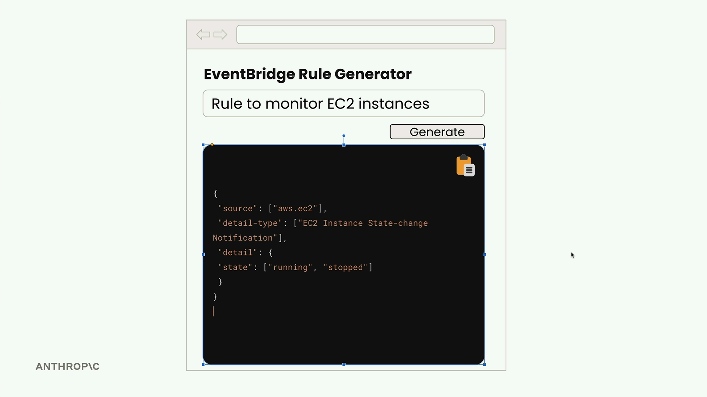
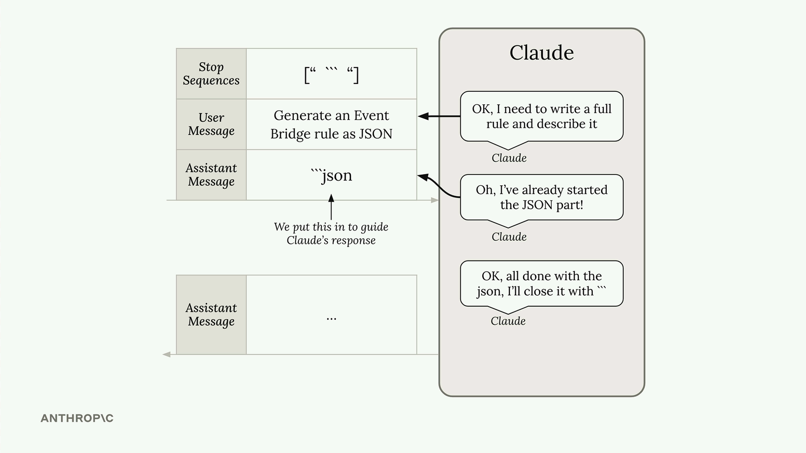

구조화된 데이터
Claude에게 JSON, Python 코드, 또는 글머리 기호 목록과 같은 구조화된 데이터를 생성하도록 요청할 때, 흔히 마주치는 문제가 있습니다. Claude는 도움이 되고자 콘텐츠 주변에 설명 텍스트를 추가하려 합니다. 이는 대개 좋은 일이지만, 때로는 순수한 데이터만 필요할 때도 있습니다.
AWS EventBridge 규칙을 생성하는 웹 앱을 만든다고 가정해 보세요. 사용자가 설명을 입력하고 생성 버튼을 클릭하면, 즉시 복사해서 사용할 수 있는 깔끔한 JSON을 기대합니다. 하지만 Claude가 마크다운 코드 블록과 설명 텍스트로 감싸진 JSON을 반환하면, 사용자는 전체 응답을 그냥 복사할 수 없고 JSON 부분만 수동으로 선택해야 합니다.

기본 응답의 문제점
기본적으로 Claude에게 JSON을 생성하도록 요청하면 다음과 같은 결과를 얻을 수 있습니다:
```json
{
"source": ["aws.ec2"],
"detail-type": ["EC2 Instance State-change Notification"],
"detail": {
"state": ["running"]
}
}
```
This rule captures EC2 instance state changes when instances start running.JSON은 올바르지만, 마크다운 서식으로 감싸져 있고 설명 텍스트가 포함되어 있습니다. 사용자가 원시 JSON을 복사해야 하는 웹 앱에서는 이것이 사용자 경험에 마찰을 일으킵니다.
해결책: 어시스턴트 메시지 프리필링 + 정지 시퀀스
어시스턴트 메시지 프리필링과 정지 시퀀스를 결합하여 원하는 콘텐츠를 정확히 얻을 수 있습니다. 작동 방식은 다음과 같습니다:
messages = []
add_user_message(messages, "Generate a very short event bridge rule as json")
add_assistant_message(messages, "```json")
text = chat(messages, stop_sequences=["```"])이 기법의 작동 원리:
- 사용자 메시지가 Claude에게 무엇을 생성할지 알려줍니다
- 프리필된 어시스턴트 메시지가 Claude로 하여금 이미 마크다운 코드 블록을 시작했다고 생각하게 만듭니다
- Claude는 JSON 내용만 작성하며 계속합니다
-
Claude가
```로 코드 블록을 닫으려 할 때, 정지 시퀀스가 즉시 생성을 종료합니다

결과는 추가 서식 없이 깔끔한 JSON입니다:
{
"source": ["aws.ec2"],
"detail-type": ["EC2 Instance State-change Notification"],
"detail": {
"state": ["running"]
}
}응답 처리
응답에 여분의 줄바꿈 문자가 있을 수 있습니다. 이는 쉽게 처리할 수 있습니다:
import json
# Clean up and parse the JSON
clean_json = json.loads(text.strip())JSON을 넘어서
이 기법은 JSON 생성에만 국한되지 않습니다. 설명 없이 구조화된 데이터가 필요할 때마다 사용하세요:
- Python 코드 스니펫
- 글머리 기호 목록
- CSV 데이터
- 설명이 아닌 내용만 원하는 모든 서식화된 콘텐츠
핵심은 Claude가 자연스럽게 콘텐츠를 감싸려 하는 것이 무엇인지 파악한 다음, 그것을 프리필과 정지 시퀀스로 활용하는 것입니다. 코드의 경우 보통 마크다운 코드 블록이고, 목록의 경우 다른 서식 마커일 수 있습니다.
이 접근 방식은 Claude의 출력 형식을 정밀하게 제어할 수 있게 해주며, 깔끔하고 구조화된 데이터가 필수적인 애플리케이션에 AI 생성 콘텐츠를 통합하는 것을 훨씬 쉽게 만들어 줍니다.